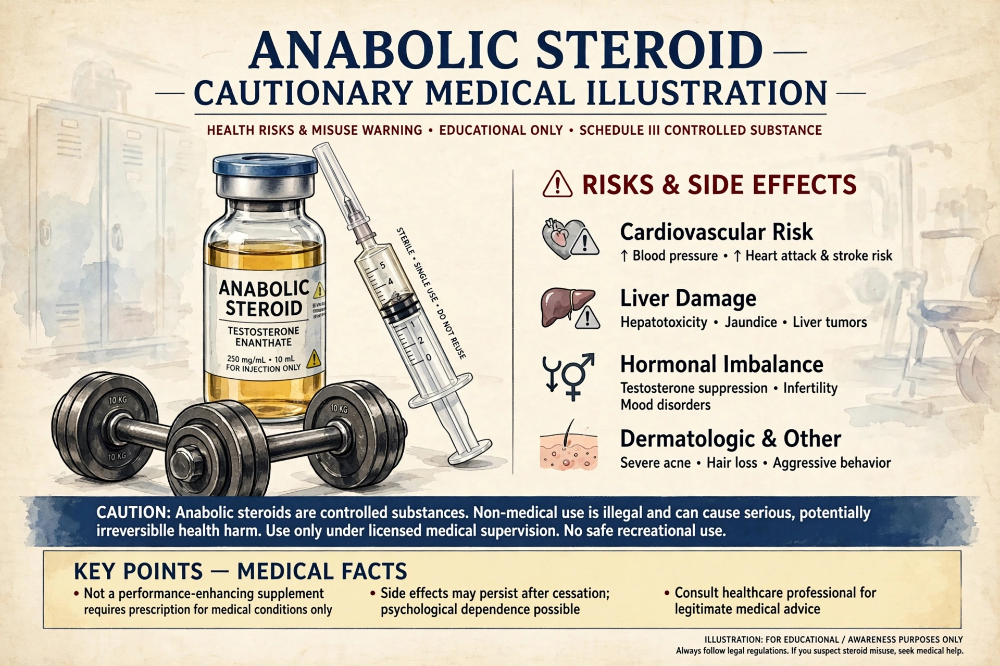

Anabolic steroids, technically anabolic-androgenic steroids (AAS), are synthetic substances related to the male sex hormone testosterone. They promote growth of skeletal muscle (anabolic effects) and development of male sexual characteristics (androgenic effects). They differ from corticosteroids such as prednisone and dexamethasone, which are primarily anti-inflammatory.

AAS are prescribed for testosterone deficiency, certain anemias, hereditary angioedema, and wasting syndromes.
Misuse by athletes and bodybuilders to increase muscle mass and performance is prohibited by sporting bodies. Adverse effects include acne, hair loss, gynecomastia, testicular shrinkage, cardiovascular harm, liver tumors, and psychiatric symptoms.
Testosterone was isolated and synthesized in 1935; anabolic derivatives proliferated from the 1950s, and doping scandals led to widespread legal control, e.g. the US Anabolic Steroids Control Act of 1990.